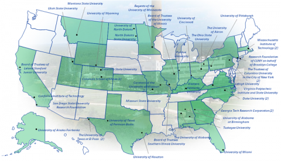

In September 2009, the U.S. Department of Energy announced more than $12.7 million in funding for geologic sequestration training and research projects. The 43 projects will offer training opportunities for graduate and undergraduate students that will provide the human capital and skills required for implementing and deploying carbon capture and storage technologies.
The results of these projects (detailed below) will make a vital contribution to the scientific, technical, and institutional knowledge necessary to establish frameworks for the development of commercial CCS projects. These projects will produce a trained workforce necessary for the CCS industry with skills and competencies in geology, geophysics, geomechanics, geochemistry and reservoir engineering disciplines.
Map of Geologic Sequestration Training and Research Projects

Click here to view larger image
- Board of Trustees of Leland Stanford Junior University (Stanford, CA) - Rock Physics of Geologic Carbon Sequestration/Storage. This project will focus on the development of theoretical rock physics models that can predict the changes in the mineral framework of porous rock based on geological and geochemical circumstances and the resulting changes in its porosity; elastic properties; absolute and relative permeability; and electrical formation factor. These results will directly help in quantifying remote seismic and electrical data in terms of monitoring, verifying and accounting of CO2 and selecting formations most suitable for geologic CO2 sequestration. This work will be conducted by three doctoral students under the supervision of a teaching professor. By conducting fundamental research, these graduate students will acquire unique technical skills in quantifying changes in rock properties during injection and storage of CO2.
- Board of Trustees Southern Illinois University (Carbondale, IL) - Risk Assessment and monitoring of Stored CO2 in Organic Rocks under Non-Equilibrium Conditions. This project proposes novel experiments to evaluate the structural behavior of the Illinois Basin’s organic rocks under extreme transient conditions and to ascertain whether the dynamic stresses will overcome the adsorption forces holding CO2 in place. Six specific tasks are proposed to evaluate the structural and mechanical behavior of organic rocks under static, hydrostatic, and extreme dynamic stresses. Graduate and undergraduate students will participate and be trained in this project.
- Board of Trustees of the University of Illinois (Champaign, IL) - Understanding the Impact of CO2 Injection on the Subsurface Microbial Community in an Illinois Basin CCS Reservoir: Integrated Student Training in Geoscience and Geomicrobiology. This project combines a research and teaching strategy to provide cross-disciplinary training opportunities in geology and geomicrobiology in the Department of Geology and the Institute of Genomic Biology at the University of Illinois Urbana-Champaign (UIUC) in the emerging field of carbon capture and storage (CCS). The project will take advantage of the unique opportunity provided by the drilling of CCS injection and monitoring wells, in conjunction with a Phase III large-scale CCS demonstration project operating at the Illinois Basin - Decatur Site in the Illinois Basin under the direction of the Midwest Geological Sequestration Consortium (MGSC) and the Illinois State Geological Survey (ISGS)to collect samples both before and after injection of CO2, to observe how CO2 injection impacts the genetic composition of the subsurface microbial community. Graduate and undergraduate students will participate and be trained in this project.
- California Institute of Technology (Pasadena, CA) – Molecular Simulation of Dissolved Inorganic Carbons for Underground Brine CO2 Sequestrations. This project addresses the need to measure the Dissolved Inorganic Carbons (DIC) in underground brine water at higher sensitivity, lower cost, in situ, at higher frequency and over long periods of time for the monitoring, verification and accounting (MVA) of CO2 sequestration. This project will support at least 2 graduate students during the research effort.
- Colorado School of Mines (Golden, CO) - Training and Research on Probabilistic Hydro-Thermo-Mechanical (HTM) Modeling of CO2 Geological Sequestration in Fractured Porous Rocks. Graduate students will be part of the development, validation and deployment of an advanced simulation and risk assessment model that can be used to predict the fate and movement of CO2 in underground formations, and to evaluate the risk of their potential leakage to the atmosphere and underground aquifers.
- Colorado School of Mines (Golden, CO) - Training Graduate & Undergraduate Students in Simulation and Risk Assessment for Carbon Sequestration. The research will advance the state-of-the-science in two critical areas of risk assessment: (1) multi-process, multi-scale quantification and simulation of the risks associated with leakage into aquifers; and (2) pore-scale geochemical processes and modeling associated with injectivity of CO2 such as mineral reactivity and multiphase flow. The work will be accomplished using state-of-the-art mathematical models for multi-scale, multiphase, multi-component hydrogeochemical processes, and creating Lagrangian models for probabilistic risk assessment. This project will support two graduate students (one MS and one Ph.D.) and one undergraduate student via research in geologic carbon sequestration.
- Colorado State University (Fort Collins, CO) - Multi-Objective Optimization Approaches for the Planning of Carbon Geological Sequestration Systems - The main objective of this project is to provide training opportunities for two graduate students in the formulation and implementation of an integrated simulation-optimization framework to provide a rigorous scientific support to the design of CCS systems that, for any given site: (a) maximize the amount of carbon storage; (b) minimize the total cost associated with the CCS project; and (c) minimize the risk of CO2 upward leakage from injected formations.
- Curators of the University of Missouri (Rolla, MO) - Numerical modeling of geomechanical processes related to CO2 injection within generic reservoirs - The main objective of this project is to model the possibility of CO2 leakage through cap rock and well penetrations by developing multi-scale Finite Element (FE) models of different geological settings for sequestration sites and compare the results concerning geomechanical processes, such as how fluid pressure induces rock deformation, how faults and fractures affect fluid migration, as well as critical wellbore placement and wellbore integrity to each other. This work will train several graduate student and develop a class lecture dedicated to integrity modeling of CO2 sequestration and one-to-one research supervision.
- Curators of the Univ. of Missouri on behalf of Missouri S&T (Rolla, MO) - Geoscience Perspectives in Carbon Sequestration: Educational Training and Research Through Classroom, Field, and Laboratory Investigations. The objects of this project are to: enhance undergraduate curriculum in geology and geochemistry through field trips that investigate the behavior of CO2 and its influence on local environmental systems; and support the fundamental research activities of four students who will develop their expertise in water-CO2-rock interactions. These research activities will provide data to the scientific and engineering community that can be used to evaluate novel and unique stratigraphic packages for carbon trapping, carbonate mineral formation, corrosion processes that enhance porosity-permeability reactions at CO2 gas injection sites, and self-induced or human-enhanced fracture sealing dynamics.
- Duke University (Durham, NC) – Carbonsheds as a Framework for Optimizing U.S. CCS Pipeline Transport on a Regional to National Scale. The objective of this project is to use "carbonsheds," a concept that was developed as a framework for optimizing transport of CO2 (with or without impurities) on an integrated technical, economic, societal and environmental basis. The specific objectives of the project include an analysis of all major types of potential CO2 storage sites (saline formations, oil and gas reservoirs, and unmineable coal seams); examination of the potential offshore extension of U.S. carbonsheds were sub-seafloor CO2 storage permitted; and exploration of the impacts of different economic/policy scenarios (e.g., the Waxman-Markey Climate Bill) on the future demand for CO2 transport within different carbonsheds using agent-based socio-economic modeling. This project will support at least two graduate students during the research effort.
- Duke University (Durham, NC) - The Potential Risks of Freshwater Aquifer Contamination with Geosequestration. This project will prioritize the risks of leakage from deep storage reservoirs to shallower drinking-water aquifers that overlie them. The work expands ongoing sample collection, laboratory incubations, and simulation modeling of these risks at Duke, creating opportunities for additional young scientists who could lead future CCS implementation.
- Georgia Tech Research Corporation (Atlanta, GA) - CO2 Geological Storage: Coupled Hydro-Chemo-Thermo-Mechanical Phenomena - From Pore-scale Processes to Macroscale Implications. The main objectives of the proposed research are to: (1) explore the geomechanical consequences of hydro-chemo-thermo-mechanical coupled processes on the reliable geological storage of CO2;(2) identify emergent phenomena, and (3) bound the parameter-domain for the efficient injection and safe long-term geological storage of CO2. The research approach will by guided by fundamental principles, combine pore and particle-scale experimental studies with numerical upscaling techniques and conclude with a macroscale numerical model. This project will support two Ph.D. graduate students during the research effort.
- Georgia Tech Research Corporation (Atlanta, GA) – High-performance Sorbents for Carbon Dioxide Capture from Air. This project team will perform a combined experimental and modeling study of air capture of CO2 using low-cost, high-capacity sorbents including, but not limited to, mesoporous solids functionalized with hyperbranched amino-polymers. Adsorption/desorption cycles will be optimized for energy inputs coming from solar thermal sources, and the viability of using air capture for generating both sequestration-ready CO2 and CO2 for algae-biofuel processes will be considered. This project will support at least two graduate students during the research effort.
- Lehigh University (Bethlehem, PA) – Thermal Integration of CO2 Compression Processes with Coal-Fired Power Plants Equipped with Carbon Capture. The project will determine the effects of utilizing heat rejected by CO2 compressors to improve power plant efficiency and increase net power output of coal-fired power plants with carbon capture. The project researchers will use first principle engineering analyses and computer simulations to determine the potential for thermal integration of the various compression processes with the carbon capture system, boiler and turbine cycle. This project will support at least two graduate students during the research effort.
- Massachusetts Institute of Technology (Cambridge, MA) - Modeling and Risk Assessment of CO2 Sequestration at the Geologic-Basin Scale. The objective of this project is to develop tools for better understanding, modeling and risk assessment of CO2 permanence in geologic formations at the geologic basin scale. This project will work to develop mathematical models of capacity and injectivity at the basin scale; to apply quantitative risk assessment methodologies that will inform on CO2 permanence; and to apply the models to geologic basins across the continental United States. This project will support a graduate and undergraduate student during the research effort.
- Massachusetts Institute of Technology (Cambridge, MA) – Analysis of Microbial Activity Under a Supercritical CO2 Atmosphere. The objectives of this project are to characterize the growth requirements and optima of a biofilm-producing supercritical CO2 (scCO2)-tolerant microbial consortium; evaluate the ability of this consortium to grow and reduce permeability in sandstone cores under simulated reservoir conditions associated with scCO2 injection; isolate and characterize individual microbial strains from this consortium; investigate the mechanisms of scCO2 tolerance in isolated strains and the consortium through genome-enabled and metagenomic studies, respectively; and perform field work to analyze the microbial diversity and enrich for scCO2 tolerant microbes at a planned CCS site. This project will support at least two graduate students during the research effort.
- Missouri State University (Springfield, MO) - Monitoring and numerical modeling of shallow CO2 injection, Greene County, Missouri. This project will support graduate students at Missouri State University (MSU) by conducting research to assess the migration of CO2 in a geologic formation in Missouri, conduct reservoir modeling, and compile this information into a geographic information system.
- Montana State University (Bozeman, MT) - Development of a 1 x N Fiber Optic Sensor Array for Carbon Sequestration Site Monitoring. A low-cost, reconfigurable 1 x N fiber sensor array will be developed for sub-surface, large area monitoring of carbon sequestration sites. This project will support at least two graduate students during the research effort.
- North Dakota State University (Fargo, ND) – Development of Protective Coatings for Co-Sequestration Processes and Pipelines. The primary goal of this project will be to examine the possible development of protective coatings for the interior of process equipment and pipelines handling supercritical CO2. This project will research the development of specialty coatings for use in co-sequestration processes and pipeline transport of supercritical CO2 fluids which might have impurities. This project will support at least two graduate students during the research effort.
- The Ohio State University (Columbus, OH) - Modeling and Evaluation of Geophysical Methods for Monitoring and Tracking CO2 Migration in the Subsurface. The project will advance the state of the art of monitoring at sites by enhancing geophysical methods to better characterize geologic conditions and monitor the effects of CO2 injection. Developed for use in petroleum exploration and development, subsurface seismic and electromagnetic techniques are the only remote detection methods that can provide an image (similar to a CATSCAN of the subsurface). These methods will be tested and enhanced through numerical simulation and physical modeling. This project will support at least 2 graduate students during the research effort.
- Purdue University (West Lafayette, IN) - Training Students to Analyze Spatial and Temporal Heterogeneities in Reservoir and Seal Petrology, Mineralogy, and Geochemistry: Implications for CO2 Sequestration Prediction, Simulation, and Monitoring. The goal of this project is to provide support for multiple graduate students to become experts in quantifying pertinent depositional and diagenetic characteristics of reservoirs and seals being developed in ongoing CO2 sequestration projects, and to explore methods for predicting changes in mineralogy and texture that will occur when these rocks are exposed to CO2- saturated brines. The proposed research group will work with samples directly tied to ongoing DOE Regional Partnership CO2 sequestration projects to: 1) quantify the mineralogy, geochemistry, and texture of reservoir and seal units; 2) explore new methods of petrographic image analysis for rapid and quantitative assessment of mineralogy, focusing on the minerals that are in contact with pore space, and; and 3) investigate temporal changes in reservoir mineralogy and texture in samples that have been experimentally exposed to CO2- saturated brines, comparing observed changes with modeled reactions.
- Regents of the University of Minnesota (Minneapolis, MN) - Geomechanical Simulation of Fluid-Driven Fractures. This project provides a basis for providing graduate and undergraduate students the opportunity to participate in path breaking research related to the modeling of fluid-driven fractures, a very challenging problem in geomechanics. The research approach will include numerical analyses with the discrete element and boundary element methods, and physical experiments for material estimation and model testing.
- Research Foundation of CUNY on behalf of Brooklyn College (Brooklyn, NY) - Carbon Dioxide Sealing Capacity: Textural or Compositional Controls. This project will investigate the role of textural and compositional parameters that control the carbon dioxide (CO2) sealing capacity of cap rocks. The proposed research project will advance our knowledge of the sealing capacity of rocks such as shales and anhydrites and, in turn, will provide a better understanding of the processes taking place in geologic reservoirs subject to CO2 injection. The proposed research will enhance our understanding regarding the sealing capacity of the most known cap rocks (shales and anhydrites), with special reference to existing and potential carbon sequestration reservoirs. This project will support at least 2 graduate students during the research effort.
- San Diego State University Research Foundation (San Diego, CA) - Web-based CO2 Subsurface Modeling. This project will build a 2/3D simulator with comprehensive chemical processes relevant to modeling CO2 injection in carbon sequestration sites. The primary focus is on the flow of CO2 into a water-filled reservoir and the resulting chemical reactions in the subsurface. The project will train new computational scientists in technologies relevant to carbon sequestration and other problems involving flow in subsurface media, create new positions, and assist in the preservation of jobs at SDSU.
- The Trustees of Columbia University in the City of New York (New York, NY) - Microbial and Chemical Enhancement of In-Situ Carbon Mineralization in Geological Formations. The goal of this research project is to develop a microbial and chemical enhancement scheme for in-situ carbon mineralization in geologic formations in order to achieve long-term stability of injected CO2. Thermodynamic and kinetic studies of CO2-mineral-brine systems will systematically be performed to develop the in-situ mineral carbonation process that utilizes organic acids produced by a microbial reactor. By combining microbial and chemical aspects of geologic sequestration, this novel fundamental research will advance the United States in its position as the leader in CCS technology, while providing interdisciplinary training opportunities for graduate and undergraduate students.
- The Trustees of Columbia University in the City of New York (New York, NY) - Geo-Chemo-Mechanical Studies for Permanent CO2 Storage in Geologic Reservoirs. This project will test and quantify that rapid CO2 capture and storage via mineral carbonation during alteration of peridotitic and basaltic rocks leads to a positive feedback via "reactive cracking" in which cracks caused by large volume change enhance porosity, permeability and reactive surface area. The team will experimentally define carbonation rates of peridotite and basalt and study catalytic effects using differential bed reactors and autoclaves. This project will support at least 2 graduate students during the research effort.
- Tuskegee University (Tuskegee, GA) – Geological Sequestration Training and Research Program in Capture and Transport: Development of the Most Economical Separation Method for CO2 Capture. Tuskegee University proposes to address the need to develop the human capital and skills required to implement and deploy carbon capture and storage (CCS) systems. The project will provide fundamental research and hands-on training and networking opportunities to undergraduate students at Tuskegee University in the area of Capture and Transport with focus on the development of the most economical separation method for CO2 capture. This project will support at least 2 graduate students during the research effort.
- The University of Akron (Akron, OH) – SO2-Resistant Immobilized Amine Sorbents for CO2 Capture. The objective of this project is to develop an efficient and low-cost CO2 capture solid sorbent which is highly resistant to SO2 poisoning and thermal degradation. The proposed concept is built on integration of acid-base chemistry with a novel approach for manipulating basic site distributions; the proposed concept can be further extended to preparation of highly poison-resistant basic catalysts for organic synthesis. This project will support at least 2 graduate students during the research effort.
- The University of Alabama (Tuscaloosa, AL) - Actualistic and geochemical modeling of reservoir rock, CO2 and formation fluid interaction, Citronelle oil field, Alabama. This project is for a three-year study of the Citronelle field, Alabama, to determine the diagenetic alteration of reservoir rock and formation fluid properties due to injection of supercritical CO2 into mature, conventional hydrocarbon reservoirs. Research methods will use widely-available and low-cost technologies to assess the geochemical composition of reservoir rock and fluids and use the MULKOM/TOUGH family of reservoir simulation programs to perform reactive transport modeling of CO2-fluid-rock interactions. This project will support graduate and undergraduate students during the research effort.
- University of Alabama at Birmingham (Birmingham, AL) - Geologic Sequestration Training and Research. The project includes the involvement of undergraduate honors students in independent research on geologic sequestration focused on the sealing capacity of geologic formations; development of an advanced undergraduate/graduate level course on coal combustion and gasification, climate change, and carbon sequestration; support of six graduate students conducting research on the development of protocols for assessment of seal layer integrity; and analysis of cap rock samples from geologic formations under consideration for sequestration of CO2.
- University of Alaska Fairbanks (Fairbanks, AK) - Geological and Geotechnical Site Investigations for the Design of a CO2 Rich Flue Gas Direct Injection and Storage of Facility in an Underground Mine -Keweenaw Basalts of the Great Lakes Region. The primary objectives of this project are: (1) to develop a methodology for the geological and geotechnical site characterization in mafic rocks through both simulations and field work and completing an economic analysis of these opportunities. This project will support graduate and undergraduate students during the research effort.
- University of Cincinnati (Cincinnati, OH) – Research and Education of CO2 Separation from Coal Combustion Flue Gases with Regenerable Magnesium Solutions. The objective of this project is to integrate the PI and Co-PI’s ongoing research on CO2 separation from coal combustion flue gases using regenerable magnesium solutions with engineering education in the field of carbon capture and sequestration for chemical and environmental engineering undergraduate and graduate students. The proposed research is to effectively and reliably separate CO2 from flue gases for potential sequestration purposes by means of CO2 absorption at 52 °C using a magnesium hydroxide (Mg(OH)2) slurry, followed by a regeneration step conducted at 65 °C. Mg(OH)2 is readily available commercially, and/or may be easily and economically reclaimed from power plants using lime-based flue gas desulfurization systems (FGD). This project will support graduate and undergraduate students during the research effort.
- University of Houston (Houston, TX) - Training toward Advanced 3D Seismic Methods for CO2 Monitoring, Verification, and Accounting. This project will train at least 2 graduate students through fundamental research based on numerical simulation of advanced seismic data ideal for mapping of caprock integrity and potential leakage pathways. The project will use numerical simulation to test rapid methods of gathering multi-component, full azimuth data ideal for this purpose.
- University of Miami (Miami, FL) - Space Geodesy and Geochemistry Applied to the Monitoring Verification of Carbon Capture and Storage. This team proposes an integrated geochemical and remote sensing approach to the monitoring, verification, and accounting of CO2 sequestered in deep geologic repositories by using high precision space geodesy (GPS and InSAR) to measure subtle surface displacements associated with pressure/volume changes at depth due to pumping of CO2 and to validate that with analytical and numerical modeling. It is expected that the proposed methodology can be implemented at relatively low cost at most proposed sequestration sites, requiring only the installation of a sparse network of GPS, seismic and geochemical stations, and low cost commercial satellite imagery. This project will support at least 2 graduate students during the research effort.
- University of North Dakota (Grand Forks, ND) – Efficient Regeneration of Physical and Chemical Solvents for CO2 Capture. The objective of this project is to evaluate the use of composite polymer membranes and porous membrane contactors for the recovery of CO2 from CO2 -rich solvent streams from coal gasification syngas. This work will also be applicable to similar post-combustion carbon capture systems. The goal of this work will be the development of materials and processes that reduce the capital and operating costs of the solvent regeneration process; particularly the energy expended in regeneration. This project will support at least 2 graduate students during the research effort.
- University of Pittsburgh (Pittsburgh, PA) – Passive wireless acoustic wave sensors for monitoring CO2 emissions for geological sequestration sites. This project aims to develop CO2 sensor and instrument for measuring and monitoring CO2 emissions for geological sequestration sites in a continuous mode, while providing training opportunities to two graduate students in the areas of acoustic wave sensors, nanomaterials and geological sequestration of CO2.
- The University of Texas at El Paso (El Paso, TX) - High Fidelity Computational Analysis of CO2 Sorption at Pore Scales in Coal Seams. High fidelity computational methods based on a variational approach will be developed that complement the ongoing research in the small-angle neutron scattering (SANS) technique at ORNL to provide unique, pore-size-specific insights into the mechanisms of CO2 sorption in coals and to characterize the density and volume of the sorbed CO2, factors that are key to determining efficacy of potential sequestration reservoirs. The approach offers a promising way of obtaining approximate analytical expressions for multiphase hydraulic conductance of pore elements. The interdisciplinary efforts involve collaborative efforts with experts from ORNL and Shell Oil Company who are engaged in GS research. This project will support graduate and undergraduate students during the research effort.
- The University of Texas at El Paso (El Paso, TX) – Investigation on Flame Characteristics and Burner Operability Issues of Oxy-Fuel Combustion. The project will conduct research to measure fundamental flame characteristics of oxy-fuel combustion and investigate their influence on combustor operability parameters. The outcome of the project will not only improve the fundamental understanding of oxy-fuel combustion process but will also provide critical experimental data for the validation of modeling tools. This project will support at least 2 graduate students during the research effort.
- University of Texas of Permian Basin (Odessa, TX) - A Modular Curriculum for Training University Students in Industry Standard CO2 Sequestration and Enhanced Oil Recovery Methodologies. This project will take industry level CO2 training and create modules for undergraduate and graduate students. In order to create the modules, UTPB/CEED will utilize a variety of sources. Data & presentations from industry CO2 Flooding Schools & Conferences, Carbon Mgt Workshops & other venues will be tailored to provide introductory reservoir & aquifer training, state-of-the-art methodologies, field seminars, site visits, and case studies for students. The modules will then be made available to other regional and national universities. This project will support graduate students during the research effort.
- University of Wyoming (Laramie, WY) – Measurements of 222 Rn, 220Rn, and CO2 emissions in natural CO2 fields in Wyoming: MVA techniques for determining gas transport and caprock integrity. The purpose of this project is to determine whether quantitative measurement techniques for Rn activity and CO2 flux, already established for natural volcanic systems can be applied to natural and laboratory CO2 analogues as a means of assessing caprock integrity. This project will provide training opportunities for two graduate students and one undergraduate student in geologic and geochemical skills required for implementing and deploying this technology. The three students will perform fundamental research to advance the science of Monitoring, Verification, and Accounting (MVA).
- Utah State University (Logan, UT) - Analysis of potential leakage pathways and mineralization within caprocks for geologic storage of CO2. This team proposes to examine the nature and controls of caprock integrity on CO2 sequestration systems by a study of exhumed analogs where modern and ancient CO2 flow has occurred. The team will evaluate the nature of fracture systems and faults that cut low permeability mudrocks, siltstones, and shales, and will examine the nature of mineralization within some of these exposures to evaluate how faults and fractures affect flow, and form leakage pathways across the rocks. This project will support several graduate and undergraduate students during the research effort.
- Virginia Polytechnic Institute and State University (Blacksburg, VA) - Double-Difference Tomography for Sequestration MVA. This project will train two graduate students in the use of double-difference seismic tomography for geologic sequestration monitoring, verification, and accounting. The students will establish data collection and processing requirements so that double-difference seismic tomography can be used to quantitatively map the mass and propagation of sequestered CO2 as a function of time. Existing field data will be analyzed using double-difference tomography to image plume migration. Finally, a graduate course will be developed to enable students to apply the best, most recent methods for using geophysical tools to image underground changes due to sequestration.
- Western Kentucky University (Bowling Green, KY) – Novel Oxygen Carriers for Coal-Fueled Chemical Looping Combustion. The proposed project will develop a series of advanced oxygen carriers for coal-fueled chemical looping combustion (CLC) to yield a high purity CO2. A CLC process model will be built to optimize the performance of the selected oxygen carriers. This project will support at least two graduate students during the research effort.